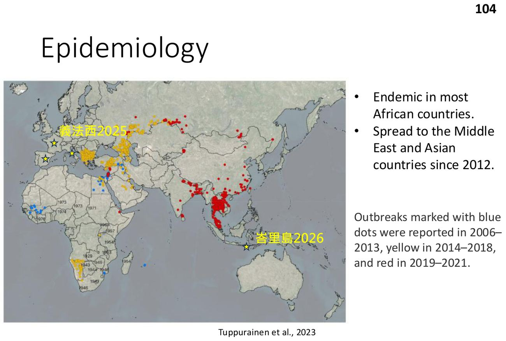
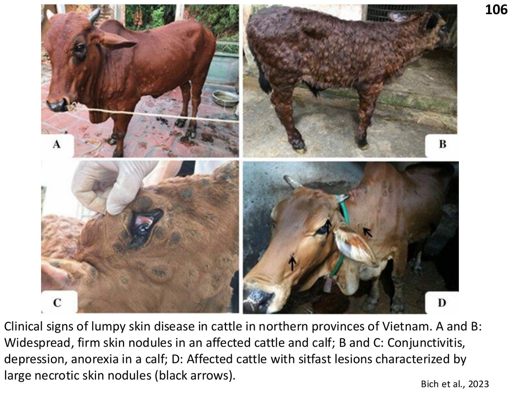

大方向與重點摘要
- 這章在講什麼
- 〈Bovine Infectious Disease〉講義第三部分 Other Diseases：牛流行熱（bovine ephemeral fever, BEF）、牛結節疹（lumpy skin disease, LSD）、牛瘟（rinderpest）、牛結核病（bovine tuberculosis, bovine TB）。腸胃道與呼吸道見牛傳染病（一）、（二）。
- 為什麼重要
- 這四個病都和台灣的防疫直接相關：BEF 在台灣是地方性流行；LSD 2020 年入侵金門、2021 年到台灣本島（新北林口）並全島接種疫苗；牛瘟已全球根除，是鑑別診斷與歷史重點；牛結核是人畜共通、WOAH 表列疾病，台灣也有乳牛場案例。
- 這章要抓的重點
-
- BEF：Rhabdoviridae、Ephemerovirus；蚊與庫蠓傳播、不接觸傳染；濕熱季流行、冬天突然消失；高發病低死亡；6 月齡–2 歲好發；公牛、重牛、高產乳牛最嚴重；雙相至多相熱 40–42°C、跛行僵硬、乳量驟降；3 天恢復（三日熱）；疫苗保護可達 12 個月。
- LSD：Capripoxvirus（Neethling poxvirus）；WOAH 通報疾病；吸血節肢動物傳播；發病率 5–50%、死亡率低；濕熱夏季、沿水道爆發；潛伏 2–4 週；皮膚結節常先出現在會陰；恢復 4–12 週；疫苗為凍乾活減毒疫苗（LSDV、羊痘或山羊痘病毒）。
- 台灣 LSD：2021 年 4 月新北林口肉牛場；撲殺病牛、移動管制、半徑 3 公里管制；全島施打減毒疫苗，約 1/3 牛出現較小的全身皮膚結節、乳量下降約一週。
- 牛瘟：Morbillivirus；2011 年 OIE／WOAH 宣布全球根除；直接或密切接觸傳播；極高發病與死亡（嚴重下痢、脫水）；黏膜糜爛潰瘍與淋巴壞死；臨床上要想到 BVD 黏膜病。
- 牛結核：主要 M. bovis（也有 M. caprae、少數 M. tuberculosis）；抗酸、生長慢、細胞內菌；慢性肉芽腫；牛間主要呼吸道傳播；人可經未殺菌生乳感染。
- 牛結核診斷：結核菌素皮膚試驗（第 IV 型遲發性過敏、皮內注射 PPD、約 72 小時判讀）：SITT（牛型 PPD）、CITT（牛型＋禽型 PPD 比較）；IFN-γ 釋放試驗；死後：組織病理／抗酸染色、PCR、培養確診。
- 容易混淆
- BEF vs BRD：都會高燒，但 BEF 是蟲媒、非接觸傳染、3 天自癒、以肌肉僵硬跛行為特色；BRD 是接觸傳播、以咳嗽與肺炎為主。LSD 疫苗反應 vs 發病：接種後約 1/3 牛出現的結節較小，不要誤當成發病。SITT vs CITT：CITT 加了禽型 PPD，用來排除環境中非結核分枝桿菌造成的假陽性。牛瘟 vs BVD 黏膜病：症狀相似，牛瘟已根除。
- 考試可能怎麼問
（推測） - BEF 的病原分類、病媒、季節、好發牛、雙相熱與別名；LSD 病原、傳播、潛伏期、結節位置、疫苗與台灣處置；牛瘟根除年份與病原；牛結核病原、傳播途徑、病變部位、結核菌素試驗原理與判讀時間、SITT 與 CITT 差異。
內容以老師講義為主體。標示「補充」的段落（含「讀書補充Note」）是講義以外的延伸；台灣法定動物傳染病分類為補充，出自防檢署與地方動物防疫機關資料；標示「推測」的是依講義強調處推測的出題方向，不是考古題。考試範圍以老師上課為準。圖片為老師講義截圖（部分照片原出處為新聞或文獻）。
牛流行熱 Bovine Ephemeral Fever (BEF)
台灣夏天的牛病：庫蠓與蚊子傳的病毒，燒三天就好，但高產乳牛的乳量損失很大。
病原與流行病學（p.96）必考
- 昆蟲傳播、非接觸傳染的牛病毒病。
- 彈狀病毒科（Rhabdoviridae）、Ephemerovirus 屬的 BEF 病毒。
- 病媒：蚊與庫蠓（Culicoides biting midges，糠蚊）。
- 熱帶地區地方性流行（包括台灣與澳洲大部分地區），延伸到亞熱帶與部分溫帶。
- 濕熱季節最盛行，冬天突然消失。
- 風與動物運輸幫助散播。
- 高發病率、低死亡率。
補充：台灣將牛流行熱列為丙類動物傳染病（臺中市動物保護防疫處宣導資料）。
致病機轉（p.97）必考
- 病毒可從嗜中性球、滑膜細胞、網狀內皮細胞分離。
- → 全身性發炎：內皮通透性增加、血管炎、漿膜腔與滑膜腔血栓。
- 6 月齡至 2 歲較常發病。
- 公牛、體重重的牛、高產乳牛最嚴重。
臨床表現（p.98–100）必考
- 突然發生雙相至多相熱（40–42°C）、顫抖、食慾差。
- 漿液性眼鼻分泌物、心跳加快、呼吸急促或困難。
- 肌肉症狀：無力、僵硬、跛行。
- 乳量驟降（乳牛場損失可觀）。
- 3 天內恢復 → 別名「三日熱（3-day sickness）」。
預防與控制（p.101）必考
- 移動限制與環境衛生（減少病媒）。
- 活減毒或不活化疫苗都能在自然爆發中預防疾病，保護期最長 12 個月。
補充（臨床）：BEF 牛倒臥時可能合併低血鈣，臨床上常同時補鈣與消炎；倒臥不起的大牛要防止續發褥瘡與肌肉損傷。
牛結節疹 Lumpy Skin Disease (LSD)
吸血昆蟲傳播的痘病毒，全身長硬結節；台灣在 2021 年用全島疫苗壓下來。
病原與流行病學（p.103–104）必考
- 牛結節疹病毒（又稱 Neethling poxvirus），Capripoxvirus 屬。
- WOAH 通報疾病。
- 經濟影響：乳量減少、體況變差、皮革損傷、公牛生育力下降、母牛流產。
- 傳播：多種吸血／叮咬節肢動物，也可能經接觸。
- 發病率 5–50%；死亡率通常低。
- 濕熱夏季發生率最高；爆發常沿著水道。
- 非洲多數國家地方性流行；2012 年後擴散到中東與亞洲；講義圖另標 2025 年義大利、法國、西班牙與 2026 年峇里島。

補充：台灣將牛結節疹列為甲類動物傳染病，防疫政策採撲殺與補償（農業部防檢署資料）。
臨床表現（p.105–106）必考
- 野外爆發潛伏期通常 2–4 週。
- 從不明顯到嚴重：發燒、鼻分泌物、流淚、流涎。
- 特徵性皮膚結節，常先出現在會陰。
- 恢復通常需 4–12 週；懷孕母牛可能流產。

預防與控制（p.107）必考
- 控制牛隻移動。
- 凍乾活減毒疫苗（以 LSDV、羊痘病毒或山羊痘病毒為基礎）最常用。
- 非疫區傳入時常見做法：撲殺病牛與接觸牛、銷毀受汙染的皮、對高風險動物接種。
- 成功控制與根除取決於早期發現第一例，接著迅速大規模接種。
台灣 2021 年林口案例（p.108–109）必考
- 2021 年 4 月中旬新北市林口肉牛場發生 LSD。
- 發病場撲殺病牛、移動管制；病毒與金門 LSD 同源。
- 周邊半徑 3 公里內養牛場移動管制、加強訪視。
- 全島施打減毒疫苗、牛場訪視。
- 減毒疫苗施打後約 1/3 牛出現全身性皮膚結節，但比發病牛小；乳牛泌乳量下降約一週。
牛瘟 Rinderpest (Cattle Plague)
人類根除的第二個病毒病（第一個是天花），但它的臨床樣貌要記得，因為 BVD 黏膜病看起來很像。
重點（p.111）必考
- 病原：牛瘟病毒，Morbillivirus 屬（副黏液病毒科）。
- 2011 年由 OIE／WOAH 宣布全球根除。
- 傳播需要直接或密切的間接接觸。
- 常以大流行（epizootics）出現，因嚴重下痢／痢疾與脫水造成極高發病率與死亡率。
- 感染黏膜上皮、單核球與淋巴球 → 黏膜糜爛潰瘍與淋巴壞死。
- 症狀：發燒、厭食、沉鬱、眼鼻分泌物，接著牙齦、頰黏膜、舌頭壞死病灶。
- 病牛出現免疫抑制，易續發細菌感染；恢復可能要數週。
- 講義提示：「Think about CD」——和其他造成口腔糜爛與下痢的病比較（病理比較見BVD 病型頁的牛瘟與惡性卡他熱表）。
補充：台灣將牛瘟列為甲類動物傳染病。講義的「CD」推測指要與 BVD 黏膜病等口腔糜爛性疾病鑑別，上課時請確認老師的意思。
牛結核病 Bovine Tuberculosis
慢性、多數沒症狀、人畜共通：要靠結核菌素試驗把帶菌牛找出來。
病原（p.113）必考
- 主要為 Mycobacterium bovis，也有 M. caprae，少數 M. tuberculosis。
- 屬結核分枝桿菌複合群（Mycobacterium tuberculosis complex, MTBC）；抗酸性、生長緩慢的細胞內菌。
- 慢性肉芽腫性疾病。
- 宿主廣：牛是主要家畜保菌者；部分國家野生動物保菌者很重要。
- 人畜共通；WOAH 表列疾病。
傳播（p.114–116）必考
| 對象 | 途徑 |
|---|---|
| 牛與牛之間 | 主要經呼吸道；較少經食入 |
| 其他物種（含人） | 氣膠／直接接觸；喝未經巴氏殺菌的受汙染生乳 |
臨床與病理（p.117–119）必考
臨床
- 通常慢性、漸進；許多感染牛沒有症狀
- 晚期：漸進性消瘦、虛弱、慢性咳嗽、淋巴結腫大、生產力下降
特徵病變：肉芽腫（結節 tubercle）
- 好發：咽後、支氣管、縱膈淋巴結
- 肺：硬、淡黃至白色結節
- 乾酪樣壞死 ± 鈣化
病變集中在咽後、支氣管、縱膈淋巴結與肺，正好對應牛之間主要經呼吸道傳播；如果是經口（喝乳）感染，病變則多在腸繫膜淋巴結（後半句為補充）。
診斷與控制（p.120–121）必考
| 時機 | 方法 | 重點 |
|---|---|---|
| 生前 | 結核菌素皮膚試驗 | 測遲發型過敏（第 IV 型）；皮內注射 PPD；約 72 小時判讀 |
| • 單一皮內試驗 SITT | 只用牛型 PPD | |
| • 比較皮內試驗 CITT | 牛型 PPD ＋ 禽型 PPD，比較兩者反應，區分 MTBC 致敏與環境中非結核分枝桿菌致敏 | |
| 生前 | IFN-γ 釋放試驗 | 測血液中的細胞免疫反應；可補充皮膚試驗 |
| 死後 | 組織病理／抗酸染色、PCR、分枝桿菌培養 | 培養為確診 |
補充：PPD（purified protein derivative）＝純化蛋白衍生物。CITT 判讀邏輯：牛型反應明顯大於禽型 → 傾向結核；禽型反應較大 → 傾向環境分枝桿菌或副結核等。牛結核在台灣為法定動物傳染病，陽性牛依規定撲殺，分類請以防檢署公告為準。
鑑別比較 Comparison
四個病的病原、傳播與控制一覽。
| 牛流行熱 | 牛結節疹 | 牛瘟 | 牛結核 | |
|---|---|---|---|---|
| 病原 | Rhabdoviridae、Ephemerovirus | Capripoxvirus（Neethling poxvirus） | Morbillivirus | M. bovis（MTBC） |
| 傳播 | 蚊、庫蠓；非接觸 | 吸血節肢動物；可能接觸 | 直接或密切接觸 | 牛間呼吸道；人經生乳 |
| 季節／分布 | 濕熱季；台灣地方性 | 濕熱夏季、沿水道；2012 後擴散到亞洲 | 2011 全球根除 | 全球；野生動物保菌 |
| 發病／死亡 | 高／低 | 5–50%／低 | 極高／極高 | 慢性，多無症狀 |
| 特徵 | 雙相熱、僵硬跛行、乳量驟降、3 天恢復 | 皮膚結節（先會陰）、恢復 4–12 週、流產 | 口腔壞死、嚴重下痢、淋巴壞死 | 咽後／支氣管／縱膈淋巴結肉芽腫、乾酪樣壞死 |
| 控制 | 移動限制、衛生；活減毒或不活化疫苗（≤ 12 個月） | 移動控制；凍乾活減毒疫苗；撲殺、銷毀皮革 | 已根除 | 結核菌素試驗、IFN-γ；確診靠培養 |
| 台灣分類（補充） | 丙類 | 甲類 | 甲類 | 法定傳染病（依公告） |
考試方向（推測）
以下是依講義強調的內容推測的出題方向，不是考古題，考試範圍以老師上課為準。
| 可能考法 | 答題重點 |
|---|---|
| BEF 病原與病媒 | Rhabdoviridae、Ephemerovirus；蚊、庫蠓；非接觸傳染；濕熱季、冬天消失；風與運輸散播 |
| BEF 好發與症狀 | 6 月齡–2 歲；公牛、重牛、高產乳牛最嚴重；雙相至多相熱 40–42°C、僵硬跛行、乳量驟降；3 天恢復 |
| BEF 機轉 | 嗜中性球、滑膜細胞、網狀內皮細胞；血管炎、漿膜與滑膜腔血栓 |
| LSD 病原與傳播 | Capripoxvirus（Neethling）；WOAH 通報；吸血節肢動物；濕熱、沿水道；5–50% |
| LSD 臨床與控制 | 潛伏 2–4 週；結節先在會陰；恢復 4–12 週、流產；凍乾活減毒疫苗（LSDV、羊痘、山羊痘）；早期發現＋大規模接種 |
| 台灣 LSD | 2021 年 4 月林口；撲殺、移動管制、3 公里；全島減毒疫苗；1/3 出現較小結節、乳量降一週 |
| 牛瘟 | Morbillivirus；2011 年根除；黏膜糜爛潰瘍、淋巴壞死、免疫抑制 |
| 牛結核病原與傳播 | M. bovis（M. caprae、M. tuberculosis）；MTBC；抗酸、慢生長細胞內菌；牛間呼吸道、人經生乳 |
| 牛結核病變 | 肉芽腫；咽後、支氣管、縱膈淋巴結；乾酪樣壞死 ± 鈣化；Langhans 巨細胞 |
| 結核菌素試驗 | 第 IV 型；皮內 PPD；72 小時；SITT（牛型）、CITT（牛型＋禽型）；IFN-γ；死後培養確診 |
練習題 Practice Quiz
病牛通常 3 天內恢復（p.98）。症狀：突然的雙相至多相熱 40–42°C、顫抖、食慾差、漿液性眼鼻分泌物、心跳加快、呼吸急促或困難、無力、僵硬、跛行、乳量驟降。